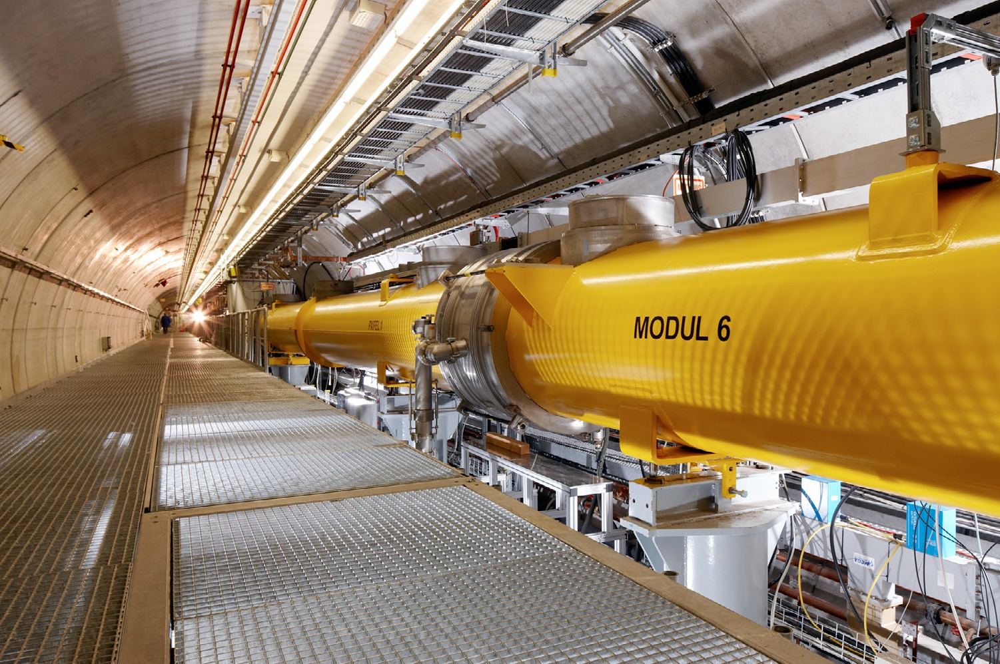

History of the FEL
Professor John Madey (1943-2016) developed and built the first FEL in 1971 at Stanford University. He eventually came to work at UHM (1998-2016), and built his own FEL in Watanabe Hall. This FEL is the one that we are finally rebuilding. His work led to the development of the SLAC in Stanford University in California, the SACLA in RIKEN SPring-8 in Japan, and the FLASH from DESY in Germany.
The FLASH at DESY in Germany
The SLAC at Stanford in the US

The SACLA at RIKEN SPring-8 in Japan